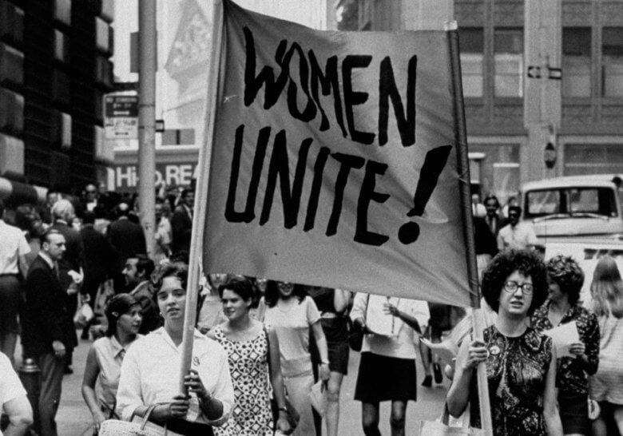

We want to know your thoughts!
Do you think feminism is alive and well in this society?
Do you believe that feminism is a big issue that females still have to deal with in 2017 or are you the opposite and view feminism as something that is pro-actively making a difference today? With our debate today this is the perfect opportunity to get your views across and with the results we would be able to understand the opinions of our youths today.
Agree
Feminism has come a long way from women not being able to vote, but is it enough? Currently there are still issues that woman still have to deal with today such as the gender pay gap. A famous example of this would be how actors and actresses are still dealing with a pay cut on big budget films compared to their male co-hosts due to their contracts from the film companies.
Disagree
On the other hand, feminism has improved immensely and woman can now gain the same opportunities as men. Woman now have the same rights as men.
Get Involved
Feminism is a hot topic at this moment in time and we want you to get involved. We hope you have been following our debate and want to share your opinion with us. If you want to engage with us in this debate, it’s easy all you need to do is tap Agree or Disagree at the bottom of your screen.